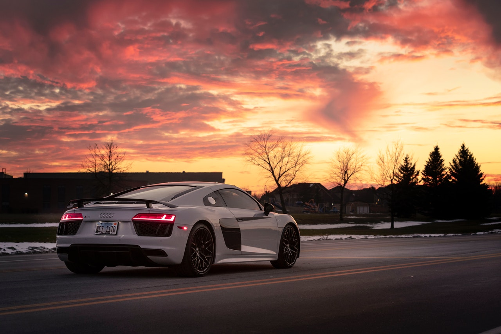
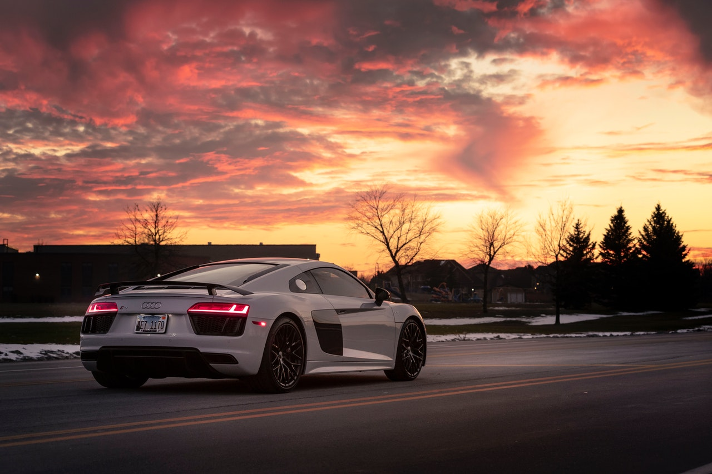

Audi R8
Audi R8 este o mașină sport de la producătorul german Audi. Este primul coupe GT cu două locuri al mărcii, care rivalizează cu mărcile istorice din acest segment: Porsche, Ferrari, Chevrolet și Aston Martin.
Audi R8 își ia numele de la mașina de curse cu același nume, câștigătoare a celor 24 de ore de la Le Mans. Mașina de spectacol Avus de la Salonul Auto de la Frankfurt din 1991, prototipul Audi quattro Spyder sau conceptul Audi Le Mans quattro care a inaugurat LED-uri, au fost inspirația pentru producția R8. R8 a fost prezentat oficial la Salonul Auto de la Paris 2006 și este prezent în reprezentanțele Audi din aprilie 2007. Este produs la Neckarsulm (Baden-Württemberg) în Germania; construcția sa este organizată ca într-o fabrică în care specialiștii verifică calitatea fiecărei piese. Prețul Audi, ca și cel al concurenților săi, depășește pragul de 100.000 de euro, fără opțiuni.
Confruntat cu entuziasmul tot mai mare pentru R8 în Europa, Audi a trebuit să-și revizuiască rata de producție în sus, crescând la 20 de R8 pe zi din 2008 pentru a ajunge la 20.000 de mașini produse în iulie 2012. Producătorul german a decis chiar să renunțe la R8, condus inițial. de un motor V8, într-o versiune mai puternică (R8 V10) în 2009, o versiune de curse (R8 LMS) în 2009, apoi o versiune decapotabilă (R8 Spyder) în 2010.
În decembrie 2021, Audi anunță că a treia generație de R8 va fi acum complet electrică, confirmând astfel multe zvonuri. Data de comercializare a acestui viitor R8 electric nu este încă cunoscută.
Optica lui Audi R8, „privire încruntă la orizont”, este subliniată opțional de un șir de 12 LED-uri (diode emițătoare de lumină). Această opțiune este cuplată cu faruri bi-xenon, una dintre noile tehnologii de iluminare – mult mai eficiente decât xenonul – pentru iluminatul de zi.
Designul lui Audi R8 include o grilă impunătoare, care preia designul trapezoidal Single Frame care echipează toate Audi-urile recente, încadrată de două prize de aer suplimentare mari. Cele patru inele marca înregistrate sunt plasate pe capotă. Cele șase culori ale caroseriei Audi R8 nu sunt neapărat uniforme, datorită prezenței lamelor laterale (pe laterale) a căror culoare și material (carbon sau aluminiu) pot fi diferite de restul vehiculului. Motorul, foarte accesibil, este acoperit de un capac transparent; poate fi și iluminat opțional. Cele patru orificii de evacuare și spoilerul care se ridică de la 100 km/h (și se închide sub 80 km/h) contribuie la conferirea unui aspect sportiv.
În interior, comenzile au o arhitectură asimetrică. R8 preia volanul neciclic pe bază plat care a apărut pe Audi RS4 și care echipează acum [Când?] toate gamele S și RS. Ergonomia și iluminatul la bord sunt absolut moderne.
La câteva luni după versiunea V10 Spyder, este rândul modelului V8 să fie disponibil în caroseria roadster [Când?]. Designul se bazează pe cel al lui Spyder V10, iar lamele laterale sunt, prin urmare, absente.
Motor si performanta
Audi R8 este propulsat de un motor V8 pe benzină de 4,2 litri, cu patru supape pe cilindru, împrumutat de la sedanul Audi RS4 și plasat în poziția centrală spate, o premieră în istoria Audi. Acesta dezvoltă o putere maximă de 309 kW sau 420 CP la 7.800 rpm și un cuplu maxim de 430 Nm atins la 4.500 rpm. Dezvoltând aproape 100 CP pe litru și atingând o turație maximă de 8.250 rpm pentru o viteză maximă de peste 300 km/h, mai mare decât concurentul său Jaguar XKR, Audi R8 trece de la 0 la 100 km/h în 4,6 s și de la 0 până la 200 km/h în 16,5 s într-un sunet „răgușit și bestial”. Motorul este compact și ușor și consumă doar 15 litri pe autostradă, dar această cifră se ridică la aproape 23 de litri la viteze mari.
Această performanță se explică parțial prin adoptarea injecției directe FSI. Această tehnologie, dezvoltată de Audi, oferă, potrivit producătorului, un dinamism semnificativ mai mare, o creștere a cuplului și a puterii și o scădere a consumului de aproape 15%. Motorul funcționează la sarcină stratificată sub sarcină parțială — un fluture concentrează fluxul de aer din galeria de admisie la nivelul bujiilor — sau la sarcină omogenă sub sarcină maximă — cu pedala de accelerație apăsată, amestecul injectat în camera de ardere este omogen. Această operațiune de injecție asigură o gestionare optimă a arderii în funcție de sarcină. Dezavantajul acestui tip de tehnologie este că necesită o bună stăpânire a funcționării sale, deoarece sarcina stratificată este posibilă doar într-un interval restrâns de turație a motorului.
Aceste performanțe sunt posibile și datorită șasiului integral din aluminiu conferă astfel „doar” 1.560 kg, dar și datorită atenției
 
